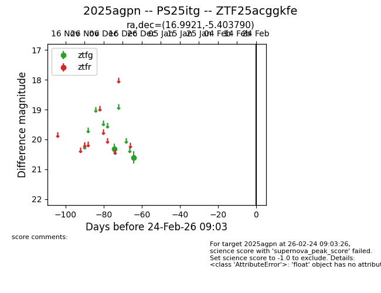
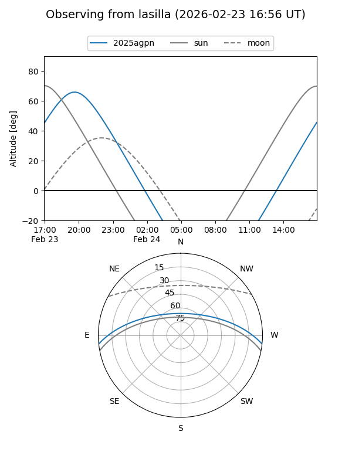
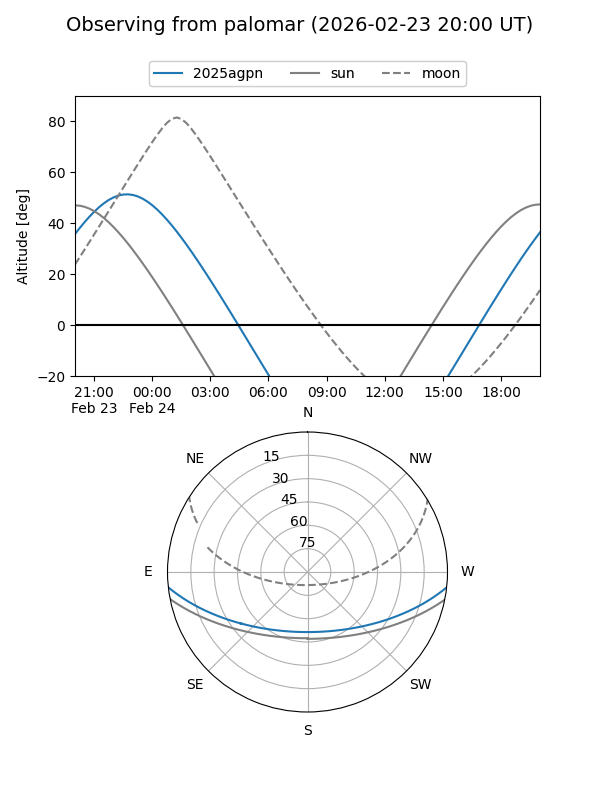

2025agpn
Target 2025agpn at 2025-12-31 17:00
Aliases and brokers:
FINK:
Lasair:
ALeRCE:
TNS:
YSE:
alt names
ZTF25acggkfe (ztf,fink_ztf)
2025agpn (tns,yse)
PS25itg (panstarrs)
Coordinates:
equatorial (ra, dec) = 16.9921,-5.40379
equatorial (HMS+DMS) = 01:07:58.10,-05:24:13.64
galactic (l, b) = (133.9357,-67.92168)
Flags:
Photometry:
last ztfg=20.60
2 ztfg detections
Lightcurve

Visibility


Additional plots